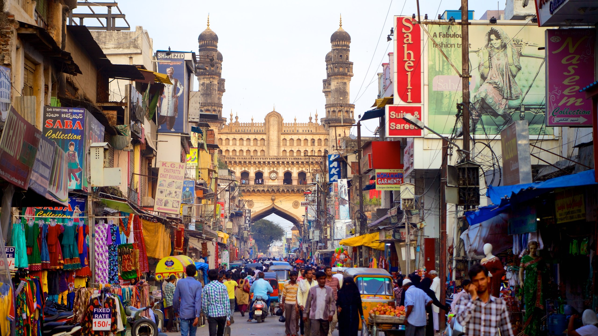
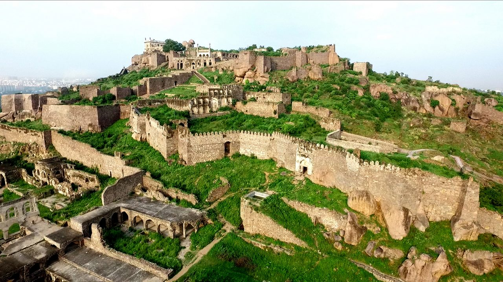

This is my very first website.
In this website I am going to share some live experiences to my visit to Hyderabad in form of some photos. I hope everyone enjoys it.
The streets around Charminar are a lively maze of narrow lanes, bustling with street vendors, colorful markets, and traditional shops. The air is filled with the aroma of spices, kebabs, and street food, adding to the historic charm. The majestic Charminar stands as a focal point, surrounded by the vibrant energy of old Hyderabad.
This place is the best to go with cousins or friends. We played many games there during night time including hide and seek etc.Golconda Fort, located near Hyderabad, is a stunning and massive fortress that offers incredible views and fascinating architecture. With its impressive walls, gates, and hidden acoustic tricks, it’s a fun spot to explore. The fort has been a key part of the area for centuries and is now a popular place for tourists to visit. Whether you're walking through its grand entrance or enjoying the light and sound show, Golconda Fort is a must-see for anyone looking to experience a bit of the city’s charm and beauty.